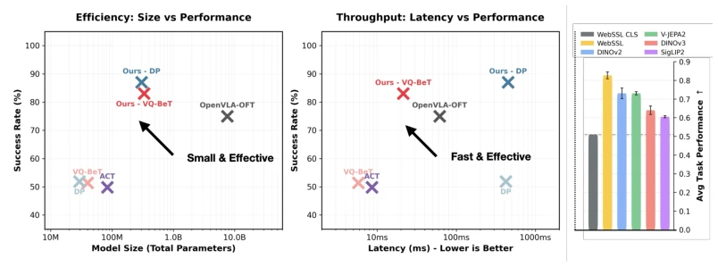
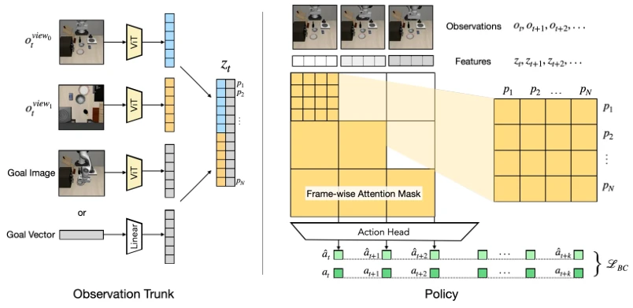
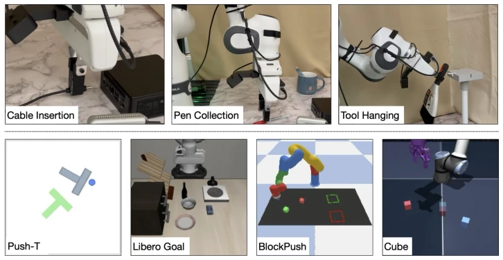
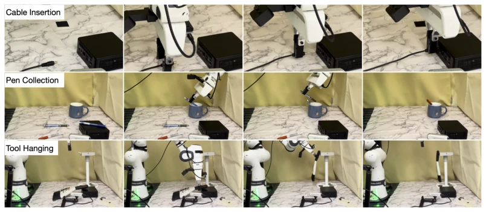
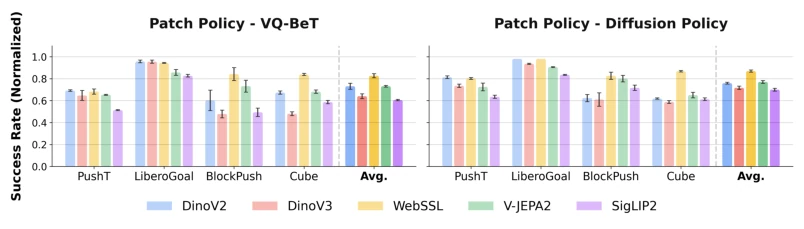
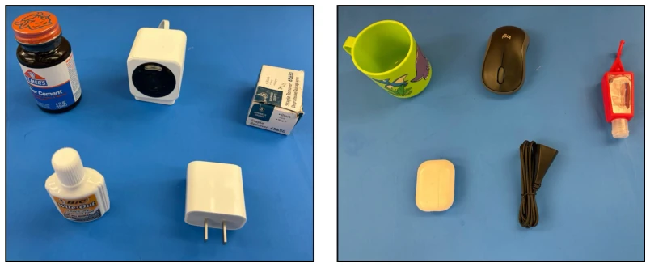
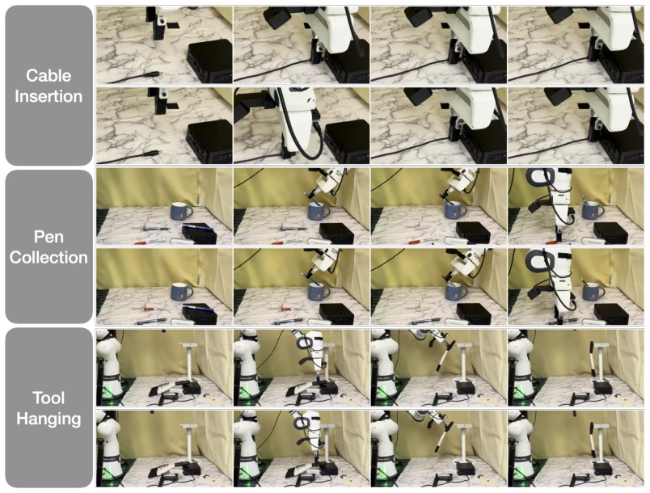
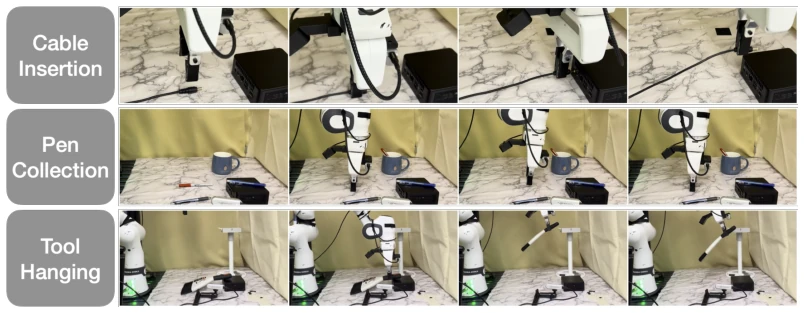
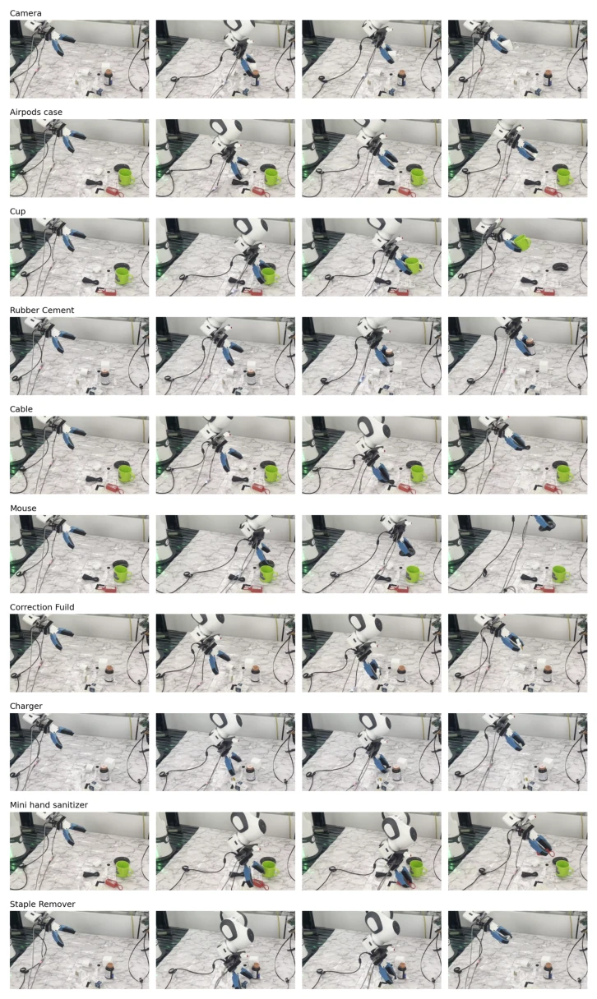
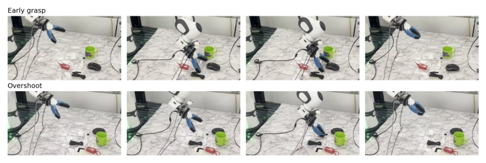

Patch Policy: Efficient Embodied Control via Dense Visual Representations
Gaoyue Zhou, Zichen Jeff Cui, Ada Langford, Bowen Tan, Yann LeCun, Lerrel Pinto abspdf
论文点评Review
这篇论文终于让具身智能界不再纠结“要么压缩成单点，要么养个十亿参数巨怪”的尴尬了。Patch Policy 用冻结的 ViT patch 特征直接喂给轻量级策略，既保留了空间细节，又避开了 VLA 的沉重包袱。相比 OpenVLA-OFT，它用了 0.7% 的参数，性能却反超 18%。不过，它目前还是纯模仿学习，没搞强化学习，且冻结 backbone 可能限制了特定领域的微调潜力。总的来说，这是个“四两拨千斤”的架构创新，把视觉表征的进步直接灌进了控制回路，证明了 dense features 才是控制的关键，而非模型规模。它让机器人学习回归本质：需要的是看清细节，而不是背诵知识。
This paper finally relieves the embodied AI community from the awkward dilemma of 'either compressing into a single point or training a billion-parameter monster'. Patch Policy feeds frozen ViT patch features directly into a lightweight policy, preserving spatial details while avoiding the heavy burden of VLA. Compared to OpenVLA-OFT, it uses 0.7% of the parameters but surpasses performance by 18%. However, it is currently purely imitation learning, without reinforcement learning, and the frozen backbone may limit fine-tuning potential in specific domains. Overall, this is a 'four ounces move a thousand pounds' architectural innovation, directly integrating the progress of visual representation into the control loop, proving that dense features are the key to control, not model scale. It returns robot learning to its essence: what is needed is to see details clearly, not to memorize knowledge.
Existing robot policies face a dilemma: either compress vision into global vectors like traditional methods (e.g., ResNet [15] or ViT CLS token), leading to loss of fine spatial information and difficulty in completing high-precision tasks like plugging wires; or fine-tune billion-parameter large models like VLA models (e.g., OpenVLA [25]), resulting in slow inference and expensive training. Patch Policy aims to resolve this contradiction between efficiency and accuracy. It points out that dense visual features themselves already contain the required geometric understanding, without needing the massive parameters of generative VLMs. Although existing VLAs are powerful, they have high computational overhead [25], while global pooling sacrifices spatial granularity [1]. This information bottleneck makes robots perform poorly in multi-object spatial tasks. The authors believe that the dense understanding capability brought by visual pre-training has been wasted, requiring a lightweight pipeline to utilize it directly.

Figure 1: We introduce PATCH POLICY, an efficient policy architecture that harnesses the power of pre-trained dense visual features. PATCH POLICY demonstrates superior performance while remain- ing computationally lean in both parameter count and inference latency. Through a rigorous analysis across five state-of-the-art visual representations, we show that our dense patch-based approach pro- vides consistent performance gains over traditional global-feature policy baselines (WebSSL CLS).
The overall process is: image input to frozen ViT encoder, extracting dense patch feature sequence (T×P×D), directly fed into Transformer policy head. The core innovation is the block-causal attention mask: fully bidirectional attention between patches within a frame, maintaining causality between frames. This utilizes spatial context while conforming to temporal control. The policy head is compatible with VQ-BeT or Diffusion Policy. Goal information can be concatenated as image or vector. During training, the visual encoder is frozen, only the policy head is trained, greatly reducing computational cost. After flattening features, 1D positional encoding is added, and the action head predicts the last token. This design avoids VLM generation overhead, focusing on action prediction. Through the block causal mask, the model can fully aggregate spatial information within a single frame while maintaining temporal dependencies, solving the problem of detail loss in traditional global pooling.

Figure 2: Architecture. PATCH POLICY consists of an observation trunk (left) with a policy head (right). We encode multiview observations into patch features and optionally concatenate goal em- beddings (images/states) into the current timestep sequence. PATCH POLICY is compatible with any transformer-based policy head. A block-wise causal mask is applied to enforce conditioning on past observations, allowing the policy to be optimized with any standard action head.
Tested on 4 simulations (Push-T, LIBERO, etc.) and 3 real tasks (plugging wires, storing pens, hanging tools). The metric is success rate. Patch Policy improves by 40% compared to the global feature baseline, and is 18% higher than OpenVLA-OFT. Ablation shows that spatial compression (e.g., pooling) significantly reduces performance. DINOv2 and WebSSL perform best. Inference latency for VQ-BeT is only 11ms, satisfying real-time requirements. In real tasks, the plugging success rate is significantly better than the baseline. Proves the importance of dense features for contact-rich tasks. Additionally, multiple visual encoders were compared, finding that SigLIP 2 performed slightly worse due to focusing on semantic alignment, further confirming the core status of spatial geometric features in control.

Figure 3: We evaluate PATCH POLICY on four simulated and three real-world environments.

Figure 4: Real-robot rollout examples for the three evaluation tasks: cable insertion, pen collection, and tool hanging. Each row shows one task rollout and visualizes key stages of the policy execution.

Figure 5: Comparison of PATCH POLICY across various pretrained visual representations. We report the mean and standard deviation across runs with three random seeds. Our results suggest that DINOv2 and WebSSL are the most effective vision backbones for robot learning tasks. We normalize BlockPush and Cube results to [0, 1] to facilitate comparison across the entire task suite.
其他图片Other Figures

Figure 6: We evaluate on 10 unseen objects for Real Franka Pickup, following the evaluation criteria in CAP [27].

Figure 7: Successful rollouts of PATCH POLICY for Cable Insertion, Pen Collection, and Tool Hang- ing.

Figure 8: Failure rollouts of PATCH POLICY for Cable Insertion, Pen Collection, and Tool Hanging.

Figure 9: CAP real Franka object pickup successes.

Figure 10: CAP real Franka object pickup failure modes.